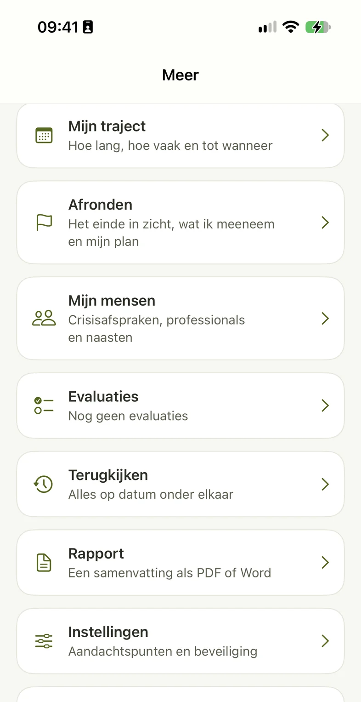

Hulp bij de app
Deze app is geen crisishulp.
Bel bij direct gevaar 112. Denk je aan zelfmoord? Bel 113 of gratis 0800-0113, of chat via 113.nl.
Veelgestelde vragen
Waar staan mijn gegevens?
Alleen op je eigen toestel. Ze worden niet naar ons of naar iemand anders gestuurd.
Hoe maak ik een back-up?
Ga naar Meer en kies Back-up. Je bewaart een bestand op een plek die je zelf kiest. De app herinnert je eraan als je een tijd geen back-up hebt gemaakt.
Ik heb een nieuw toestel. Hoe neem ik mijn gegevens mee?
Maak op je oude toestel een back-up en lees die op je nieuwe toestel in via Meer, Back-up.
Ik heb de app verwijderd. Zijn mijn gegevens weg?
Ja, tenzij je een back-up hebt gemaakt. Wij kunnen ze niet terughalen, want wij hebben ze niet.
Kan ik de app vergrendelen?
Ja. De app gebruikt de beveiliging van je toestel, zoals Face ID of je toegangscode. Je zet dit aan of uit via Meer, Instellingen.
Hoe deel ik iets met mijn behandelaar?
Je kunt een onderdeel mailen, of via Meer, Rapport een samenvatting maken als PDF of Word. Jij kiest wat erin komt.
Kost de app geld?
Nee. De app is gratis en bevat geen reclame.

Contact
Kom je er niet uit, of heb je een idee voor de app? Mail naar support@krachtvanaandachtapp.nl.
Zet geen persoonlijke gegevens over je behandeling in je mail.